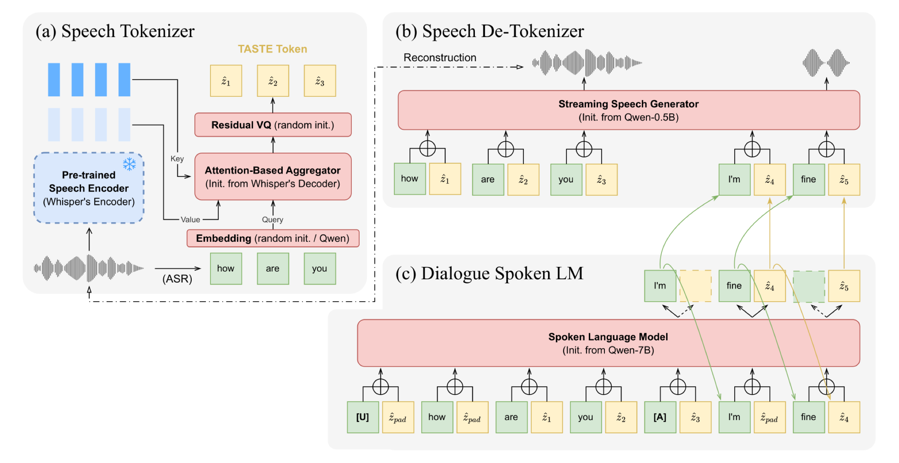
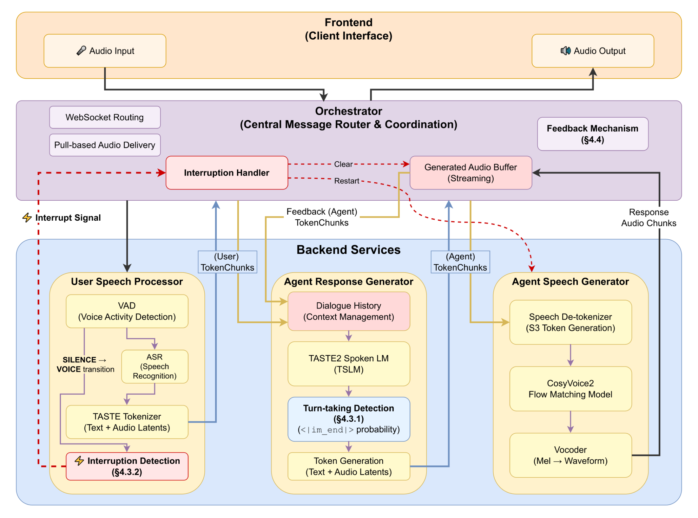

Shared vocabulary
A common text-token vocabulary removes word-level averaging and language-dependent segmentation.

Full-duplex voice interaction requires more than converting one complete utterance into another. A system must process speech as it arrives, decide when to take or yield the floor, and stop when the user interrupts, while preserving pretrained linguistic competence and acoustic paralinguistic cues. We present TASTE2, which transforms the original utterance-level TASTE method into an incremental dialogue stack.
A shared text-token vocabulary removes word-level averaging across the Speech Tokenizer, Spoken LM, and Speech Detokenizer. Modality-aligned dialogue training predicts one continuous audio latent for each text token without interleaving heterogeneous token streams, and an incremental Speech Detokenizer enables streaming synthesis through CosyVoice2. We also build TASTE2 VoiceBot, a working research system that processes user speech incrementally, streams synthesized audio, and stops generation when the user barges in.
A common text-token vocabulary removes word-level averaging and language-dependent segmentation.
The Spoken LM predicts one continuous audio latent per text token without lengthening its sequence.
An incremental Speech Detokenizer produces S3 units and synthesizes audio through CosyVoice2.
| Evaluation | TASTE2 result | Finding |
|---|---|---|
| LLaMA-Questions | 56.3% | 87.6% of the 64.3% text-only reference accuracy is retained. |
| User interruption | 0.060 s | Immediate barge-in response with coherent continuation. |
| Full-Duplex-Bench v1.0 | 4 best + 1 tie | Strong pause handling, backchanneling, and interruption behavior. |
| Mean time to first audio | 2.701 s | 22% faster with TensorRT; synthesis remains the bottleneck. |
Full-Duplex-Bench v1.0 contains 727 samples across five tasks. TASTE2 achieves the best value in four benchmark columns and ties the best in a fifth among the systems reported in the paper.
The deployed system processes user speech incrementally, uses VAD-triggered and model-gated turn decisions, streams generated audio, and stops playback when the user barges in.

TASTE2 establishes text-aligned speech modeling as a practical foundation for full-duplex voice interaction. The model preserves most of its text reference's benchmark accuracy without lengthening the token sequence, while the deployed system demonstrates incremental processing, streaming synthesis, and interruption handling. Natural-conversation robustness, speech-generation latency, and feature-general paralinguistic control remain open challenges.
BibTeX will be added when the public paper record is available.